14k visualizações nos estudos disponibilizados na internet, 21 projetos entregues, participações em 2 grandes eventos da área de marketing e olha que estamos apenas no 1º ano de vida.
Logo no começo de 2015 apresentamos o Pedalando na Cidade e uma das maiores preocupações dos ciclistas são as ciclovias. Por isso, tivemos a ideia de criar este aplicativo mobile altamente intuitivo e objetivo.
Ciclovias são importantíssimas para manter a segurança do ciclista. Além disso, este tipo de estrutura atrai pessoas que querem adquirir um novo hábito. Porém, essas pessoas questionam muito sobre a qualidade de alguns trechos e, por isso, elas são importantíssimas para a melhoria dos serviços:
Além do aplicativo ajudar o ciclista, também é possível favoritar as ciclovias preferidas. Isso, no futuro, auxilia – e muito – no processo de expansão da malha cicloviaria na cidade, visto que se torna possível ampliar as fontes de consulta da demanda de uso.
Mais do que criar algo que melhore a experiência de uso das pessoas com os serviços das empresas, também nos preocupamos em revisar a cadeia de processos para melhorar – cada vez mais – o que foi criado.
Em São Paulo temos visto uma série de acontecimentos dentro do conceito Cidade para as pessoas e, diante disto, observamos uma oportunidade real de inserir a marca Açaí Frooty neste contexto para promover entretenimento às pessoas e, também, causar experimentação de produto.
Antes de pensarmos no conceito da campanha, buscamos por referências internas como o Pedalando na Cidade, mas, também, recorremos a pesquisas externas para validar nosso racional criativo.
E com base na observação de novos comportamentos, chegamos ao conceito de campanha chamado Na Praia da Paulista, ação que teve como objetivo transmitir valores sustentáveis da marca, gerar experimentação de produto e, mais do que isso, integrar o digital com o off-line. Neste case, mesmo que ainda não aprovado (hehe), podemos brincar bastante com as imagens, pois é bem bonito de se ver. Caso role (buda dirá sim) atualizamos a página com um belíssimo vídeo da campanha
